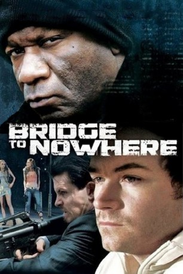
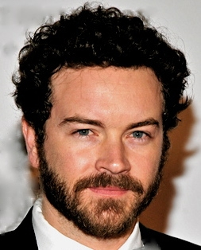
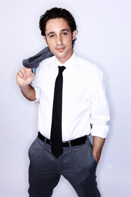

#9075 Bridge to Nowhere - Die dunkle Seite des Traums
Alternativ: The Bridge to Nowhere
 
 IMDB-Wertung: 5.6 / 10
IMDB-Wertung: 5.6 / 10  Metascore: 0
Metascore: 0 
Vier Jugendfreunde aus Pittsburgh stehen als knapp 30-Jährige vor den kümmerlichen Errungenschaften ihrer Leben und beschließen in einer tollkühnen Aufwallung, in der verbleibenden Zeit dem schlechten Ratschlag eines Kumpels zu folgen und das Glück auf kriminellen Wegen zu suchen. Kurzerhand gründet man mit Crackhuren einen Callgirlring und sorgt auch gleich noch in gerechter Arbeitsteilung für den Drogennachschub. Den Stoff besorgt ein echter Gangster, und damit fängt der Ärger an.
Jahr: 2009
Dauer: 105 Minuten
FSK:
Land: USA Studio: Image EntertainmentTonspuren: DTS - ,
Untertitel: Deutsch,
Auflösung: 1080p (1920x1080) Größe: 9318 MB
Genre: Drama, Krimi
Regisseur: Blair Underwood
Drehbuch: Kenny Golde
Soundtrack: Scott Glasgow
Darsteller:
 Ving Rhames als
Ving Rhames als - Bijou Phillips als Jasper
-  Danny Masterson als Kevin
- Ben Crowley als Brian
 Daniel London als Chris
Daniel London als Chris-  Thomas Ian Nicholas als Eddie Stanton
- Alexandra Breckenridge als Sienna
- Annie Kitral als Brian's mom
 John W. Iwanonkiw als Deputy Sheriff
John W. Iwanonkiw als Deputy Sheriff- Corey Rieger als Partygoer
 William Kania als Police Officer (uncredited)
William Kania als Police Officer (uncredited)- Dwayne Pintoff als Police Officer (uncredited)
- Mike Wittlin als Commander Bernsen (uncredited)
- Sean Derry als Darick
- Alanna Janell als Kimberly
- Tom Kurlander als Realtor
- Billy Elmer als Dirty John
- Ryan Gorham als Tattooed guy by pool table
- Falconer Hudson als Police officer
- Tommy Lafitte als Homeless Man
- Mike Miklosko als Police Officer
- Rejeana Silla als Jacuzzi girl / party girl
- Max Starks als Prisoner
- Tony Amen als Bar Patron (uncredited)
- Jeremy Moon als Police Officer (uncredited)
- Jackson Nunn als Bar Guy # 1 (uncredited)
Datei: X:\2009(A-F)\Bridge to Nowhere - Die dunkle Seite des Traums (2009, FSK, 1920x1080).mkv seit 19.07.2018
Festplatte: HD 2008(G-Z)-2009(A-F)
 Es gibt insgesamt 91 Filme in der Gruppe '2009(A-F)'
Es gibt insgesamt 91 Filme in der Gruppe '2009(A-F)'